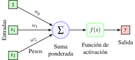

Redes Neuronales Recurrentes
Universidad CEU San Pablo
Neurona tradicional (perceptron)
Neurona tradicional
Neurona recurrente
Una neurona recurrente recibe un vector de entrada \(x_t\) y un estado oculto previo \(h_{t-1}\).
Actualización típica: \[ h_t = f(W_{hx}x_t + W_{hh}h_{t-1} + b_h), \quad y_t = g(W_{yh}h_t + b_y) \]
La función de activación \(f\) suele ser \(\tanh\) o ReLU.
La función de salida \(g\) depende de la tarea (identidad para regresión, softmax para clasificación).

Neurona recurrente
Despliegue temporal de una red neuronal recurrente
Memoria del estado oculto
El estado tiene memoria: \(h_t\) acumula efectos de entradas previas.
Sensibilidad temporal:
- Inicialización ortogonal o uniforme evita explosiones iniciales.
- Escalar la entrada y normalizar mantiene la señal en rango de la activación.
La longitud de dependencia útil decrece con la profundidad temporal por desvanecimiento/explosión del gradiente.
Función de pérdida
Para series etiquetadas se suman pérdidas por paso \[ \mathcal{L} = \sum_{t=1}^T \ell(y_t, \hat{y}_t) \] donde \(\hat{y}_t\) es la predicción del modelo y \(\ell\) la pérdida apropiada (MSE, cross-entropy).
En tareas many-to-one (p. ej. clasificación de secuencia) se suele usar solo la pérdida del último paso.
Retropropagación en el tiempo (BPTT)
El gradiente de \(\mathcal{L}\) respecto a \(W_{hh}\) acumula términos de todos los pasos \[ \nabla_{W_{hh}}\mathcal{L} = \sum_{t=1}^T \left(\frac{\partial \mathcal{L}}{\partial h_t} \prod_{k=1}^t \frac{\partial h_k}{\partial h_{k-1}}\right)\frac{\partial h_{t-1}}{\partial W_{hh}} \]
Los productos repetidos de jacobianos pueden:
- Desvanecerse (\(\|\partial h_k/\partial h_{k-1}\| < 1\)) → memoria corta.
- Explotar (\(\|\partial h_k/\partial h_{k-1}\| > 1\)) → entrenamiento inestable.
BPTT truncado limita la retropropagación a \(K\) pasos para reducir coste y estabilizar el gradiente.
Arquitecturas
Patrones de entrada/salida
- Uno a muchos: generar secuencias a partir de un contexto (p. ej. captioning).
- Muchos a uno: clasificación de secuencias (sentimiento, intención).
- Muchos a muchos sin desfase: etiquetado por paso (POS tagging).
- Muchos a muchos con desfase: traducción seq2seq (codificador-decodificador).
RNN profundas
Apilan capas recurrentes para ampliar capacidad.
\[ h_t^{(l)} = \phi(W^{(l)}_{xh} h_t^{(l-1)} + W^{(l)}_{hh} h_{t-1}^{(l)} + b^{(l)}) \]
La normalización recurrente (LayerNorm/WeightNorm) ayuda a estabilizar capas profundas.
Problemas de gradiente
- Desvanecimiento: activaciones saturadas (sigmoide), valores propios \(< 1\) en \(W_{hh}\).
- Explosión: valores propios \(> 1\) o secuencias largas; mitigación con clipping.
- Soluciones:
- Funciones \(\tanh\) o ReLU con inicialización ortogonal.
- Clipping de norma global del gradiente.
- Unidades con compuertas (LSTM, GRU) que controlan flujo de información.
Unidades con compuertas
LSTM (Long Short-Term Memory)
Ecuaciones por paso \(t\) \[ \begin{aligned} f_t &= \sigma(W_f x_t + U_f h_{t-1} + b_f) && \text{(puerta de olvido)}\\ i_t &= \sigma(W_i x_t + U_i h_{t-1} + b_i) && \text{(puerta de entrada)}\\ \tilde{c}_t &= \tanh(W_c x_t + U_c h_{t-1} + b_c) && \text{(candidata)}\\ c_t &= f_t \odot c_{t-1} + i_t \odot \tilde{c}_t && \text{(estado de celda)}\\ o_t &= \sigma(W_o x_t + U_o h_{t-1} + b_o) && \text{(puerta de salida)}\\ h_t &= o_t \odot \tanh(c_t) && \text{(estado oculto)} \end{aligned} \]
El estado de celda \(c_t\) crea un camino aditivo que preserva gradiente en el tiempo.
Neurona LSTM
GRU (Gated Recurrent Unit)
Mezcla compuertas y estado \[ \begin{aligned} z_t &= \sigma(W_z x_t + U_z h_{t-1} + b_z) && \text{(actualización)}\\ r_t &= \sigma(W_r x_t + U_r h_{t-1} + b_r) && \text{(reinicio)}\\ \tilde{h}_t &= \tanh(W_h x_t + U_h (r_t \odot h_{t-1}) + b_h)\\ h_t &= (1 - z_t) \odot h_{t-1} + z_t \odot \tilde{h}_t \end{aligned} \]
Menos parámetros que LSTM, rendimiento similar en muchas tareas.
Neurona GRU
Estabilidad y regularización
Técnicas habituales
Inicialización ortogonal en \(W_{hh}\) y Xavier/He en \(W_{xh}\).
Apagado recurrente: se aplica la misma máscara en el tiempo.
Clipping de gradiente: limitar norma \(L_2\) o valor absoluto.
Regularización \(L_2\) y early stopping con validación temporal (ventanas consecutivas).
Cuadrado medio de errores en regresión y entropía cruzada en
clasificación secuencial.
Diseño de ventanas para series
Longitud de ventana \(L\): suficiente para capturar la estacionalidad o dependencia.
Paso (stride) \(s\): controla solapamiento; stride pequeño → más muestras pero más correlación.
Normalizar por ventana o globalmente para evitar drift numérico.
Ejemplo numérico de actualización de pesos
- Una sola neurona recurrente con función de activación \(f = \tanh\), sin sesgos
\[ h_t = \tanh(W_{xh} x_t + W_{hh} h_{t-1}),\quad y_t = h_t \]
Secuencia de entrada de dos pasos: \(x_1 = 1,\; x_2 = -1\). Objetivo en el segundo paso \(y_2 = 0.2\).
Pesos iniciales: \(W_{xh} = 0.5,\; W_{hh} = 0.1\).
Estado inicial \(h_0 = 0\).
Paso hacia delante
- \(a_1 = 0.5 \cdot 1 + 0.1 \cdot 0 = 0.5 \ \Rightarrow\ h_1 = \tanh(0.5) \approx 0.462\)
- \(a_2 = 0.5 \cdot (-1) + 0.1 \cdot 0.462 = -0.454 \ \Rightarrow\ h_2 = \tanh(-0.454) \approx -0.426\)
- Pérdida (MSE solo en \(t=2\)): \(\mathcal{L} = \tfrac{1}{2}(h_2 - y_2)^2 = 0.5 \cdot (-0.426 - 0.2)^2 \approx 0.195\)
Gradientes por BPTT (2 pasos)
- Derivadas locales: \(\frac{\partial \mathcal{L}}{\partial h_2} = h_2 - y_2 \approx -0.626\); \(\frac{\partial h_2}{\partial a_2} = 1 - \tanh^2(a_2) \approx 0.819\).
- Influencia a \(t=2\): \(\frac{\partial \mathcal{L}}{\partial W_{xh}} = \frac{\partial \mathcal{L}}{\partial h_2}\frac{\partial h_2}{\partial a_2} x_2 \approx 0.512\); \(\frac{\partial \mathcal{L}}{\partial W_{hh}} \approx -0.236\).
- Propagación a \(t=1\): \(\frac{\partial \mathcal{L}}{\partial h_1} = \frac{\partial \mathcal{L}}{\partial h_2} W_{hh} \frac{\partial h_2}{\partial a_2} \approx -0.051\).
- Derivada en \(t=1\): \(\frac{\partial h_1}{\partial a_1} = 1 - \tanh^2(0.5) \approx 0.787 \Rightarrow \frac{\partial \mathcal{L}}{\partial W_{xh}} = \frac{\partial \mathcal{L}}{\partial h_1}\frac{\partial h_1}{\partial a_1} x_1 \approx -0.040\).
- Gradientes totales: \(\nabla_{W_{xh}} \mathcal{L} \approx 0.472\); \(\nabla_{W_{hh}} \mathcal{L} \approx -0.236\).
Actualización (descenso del gradiente)
- Con tasa de aprendizaje \(\eta = 0.1\):
- \(W_{xh} \leftarrow 0.5 - 0.1 \cdot 0.472 \approx 0.453\)
- \(W_{hh} \leftarrow 0.1 - 0.1 \cdot (-0.236) \approx 0.124\)
- Tras la actualización, la señal recurrente (peso \(W_{hh}\)) aumenta ligeramente para corregir el error en el segundo paso.
Prácticas recomendadas
- Al apilar capas recurrentes, propaga toda la secuencia a la capa superior (salida por paso) para no perder contexto.
- Para texto o secuencias categóricas, usa representaciones densas (embeddings) y longitudes homogéneas.
- En series largas, usa BPTT truncado y validación temporal para controlar deriva y sobreajuste.